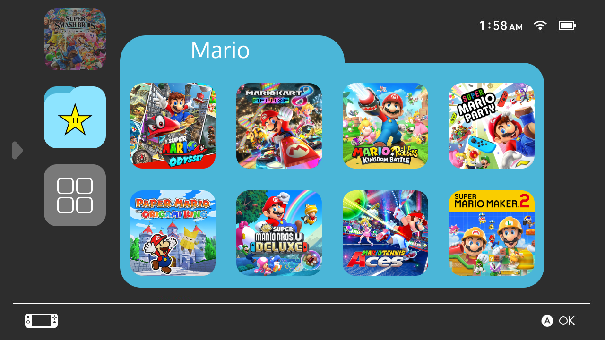
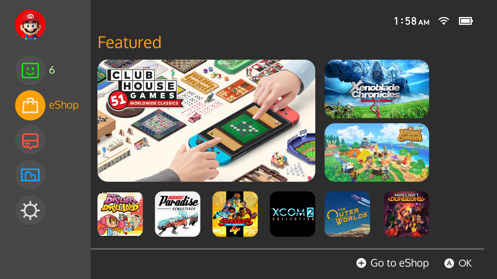
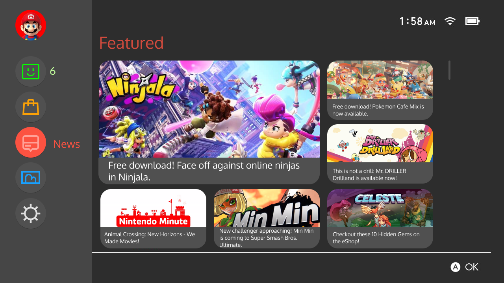
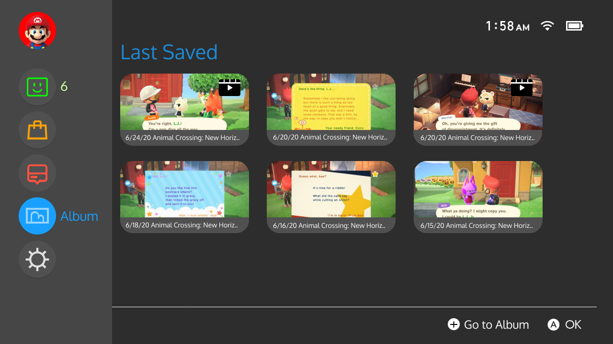
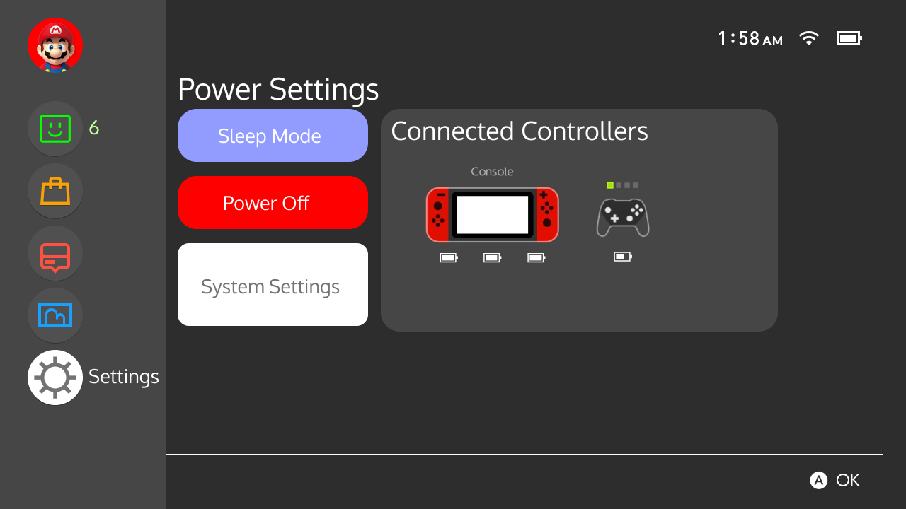

This redesign focuses on being more touchscreen friendly for players. All of the main menu items and games are easily reachable by thumb without having to adjust your grip. Rounded corners are found throughout to better fit the Switch's aesthetic like the joycons or the logo itself. My goal was to add more functionality, accessibility, and increase visual appeal without cluttering the display.
This idea came from a personal user pain point. When looking at the Nintendo Switch's current menu, I find it to be missing characteristics that are found in other gaming platform's menus that are not only useful, but are visually appealing. When looking at other menu interfaces such as PlayStation or Steam, a selected game has a "landing page" look where a backdrop appears and various metrics or related information is displayed with that game. For my redesign, I borrowed this trend which brings information to the forefront instead of being found deep in the menu. I gathered input from various friends who also play the Nintendo Switch and noting down their suggestions on what they also found lacking on the current state.
This is the main screen with a game selected. More information is displayed like the Total Play Time, Friends who also have played this game, and Related News which would be a vertical scrollable list of the latest updates/DLC to a game. This would be useful especially on games that have frequent updates like Animal Crossing. The arrow on the left side of the screen indicates a side panel menu.
Scrolling through games changes the background.
Custom folders to organize games.
Each menu icon is now found in a side panel menu. A new Friends icon is added to better access your friends list and shows the current number of online friends. I removed the Controller and Sleep icons and those options are now found in the Settings icon. Selected menu icons now have an "inverted" look to them to add more color instead of a thin outline highlighting the icon.
Friends list screen. Your favorite friends are always going to be first on top. Online and Offline friends show after and is vertically scrollable.
eShop shows a preview of the Featured page. This gives a better look at the eShop and going straight to a game's store page without having to wait for it to load and see what's new. Pressing the + button takes you to the actual eShop.
The News shows featured news first and is scrollable. Overall, it's going to work the same as the current way except with a re-designed look.
The Album now shows the 6 last saved screenshots/videos. Videos now show an easier to identify icon. Added some info on each thumbnail. Pressing the + button takes you to the full Album.
Settings now houses Power, Controller, and System Settings. Power Settings are more to the left to be easily reachable after selecting Settings. The Controller Settings are now in a Connected Controllers panel that quickly previews what controllers are currently connected.